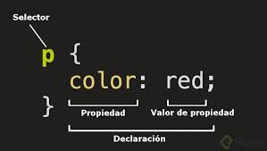

1.1-CSS significa hoja de estilo en cascada
1.2-CSS sirve para estilos de texto muy bàsicos como,
por ejemplo:
Cambiar el color y el tamaño de los encabezados y los enlaces.
Tambièn
se puede utilizar para crear un diseño. El programa que se utiliza es un browser.
1.3-El CSS es un lenguaje basado en reglas: Cada usuario define las reglas
que especifican los grupos de estilos que van a aplicarse a elementos
particulares o grupos de elementos de la pàgina web.
1.4- Las reglas son un conjunto de propiedades y valores que se aplicarán a una o varias etiquetas según necesitemos. 
- Anatomia de la regla CSS
- selector:Selecciona el(los) elemento(s) a dar estilo (en este caso, los elementos ). Para dar estilo a un elemento diferente, solo cambia el selector.
- declaraciòn: aplica las propiedades que querés dar al elemento seleccionado en el Selector.
- Propiedades: es lo que te permite dar un estilo a un elemento HTML. En el ejemplo la propiedad es color que le dará color a las letras de los párrafos.
- Valor de la propiedad:Las propiedades deben tener un valor. Cada propiedad tiene valores definidos.
1.5-El CSS tendrá diferentes tipos de selectores, un selector nos permitirá aplicar estilos a elementos
específicos
de HTML. De esta forma es posible ser preciso al momento de aplicar diseño a un sitio web.
1.6-Selectores
- selector universal:Nos permite aplicar estilos a todos los elementos HTML de un documento y se indica mediante el *.
- selector por etiquetas:Aplicamos propiedades CSS a una etiqueta. La misma se identifica sin utilizar <>.
- Selector descendente:Con este selector seleccionamos un elemento que está dentro de otro del mismo tipo. Estos seectores siempre están formados por dos o más selectores separados entre si.
- Selector de clases:Los selectores de clases comienzan siempre por un . (punto). Los clientes web (navegadores) identifican este punto y lo distinguen del resto de los selectores.
- Selector de ID:Este tipo de selector es igual al de clase, aunque lo aplicaremos a un único elemento HTML de nuestra página
1.7-
- El navegador carga el HTML (por ejemplo, lo recibe de la red).
- Convierte el HTML en un DOM (Modelo de objetos del documento). El DOM representa el documento en la memoria del ordenador. Lo explicaremos más detalladamente en la sección siguiente.
- Entonces, el navegador va a buscar la mayor parte de los recursos vinculados al documento HTML, como las imágenes y los videos incrustados... ¡y también el CSS vinculado! JavaScript aparece un poco más adelante en el proceso, pero no vamos a hablar de ello aún para evitar complicar las cosas.
- El navegador analiza el CSS y ordena en diferentes «cubos» las diferentes reglas según el tipo de selector. Por ejemplo, elemento, clase, ID, y así sucesivamente. Para cada tipo de selector que encuentre, calcula qué reglas deben aplicarse y a qué nodos en el DOM se les aplica el estilo según corresponda (este paso intermedio se llama árbol de renderización).
- El árbol de renderización presenta la estructura en que los nodos deben aparecer después de aplicarle las reglas.
- En la pantalla se muestra el aspecto visual de la página (esta etapa se llama pintura).
1.8-Existen 3 formas de vincular css:
1-con un atributo style
2-con la etiqueta style en la parte head
3-un archivo con extensiòn .css
1.9-